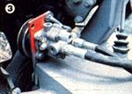

Mother's Mini-Tractor (Part Iii)
Here's the third (and final installment in our series on a build-it-at-home mechanical mule.
November/December 1982
Back in issue 76 we published the first of a trio of articles detailing the construction of a rugged garden tractor that will stand up to the factory-made jobs, yet can be built for about half the purchase price of such vehicles. That installment, plus the second feature (in No. 77), provided all of the basic information required for anyone familiar with metal fabrication to bring the project to completion.
We knew, however, that some folks might want more than a simple workhorse with which to tackle the assorted tasks that invariably crop up around the house or farmstead. So we went ahead and added three "big tractor" goodies to our pint-sized pony . . . accessories that let it do more tricks than a monkey on a 20-foot pole!
This set of mechanical aids (a Category 0 three-point hitch, its hydraulic lift, and a power takeoff system) make the mini-tractor compatible with any number of attachments currently available for small machines . . . and give the backyard tinkerer some real incentive to come up with a few useful pieces of equipment specifically designed to tackle the jobs he or she needs to do.
With these additions, of course, the tractor is more versatile . . . and although the materials necessary to build the extras raise the cost of the project by over $500, we're sure that folks will find these options well worth the increased expense.
A THREE-POINT HITCH AND HYDRAULICS
The basic tractor, as detailed in issue 77, uses a simple bar hitch for towing, but we've since replaced that with an inexpensive (it set us back less than $100) threepoint assembly sized to fit Category 0 implements. Aside from two 1-1/8" flange bearings and four 5/8" linkends, which had to be purchased, the remaining materials (an assortment of flat bars, a piece of angle iron, cold-rolled and threaded rod, and some hardware) were scrounged from scrap.
As anyone familiar with farm equipment knows, a three-point hitch consists of a framework, fastened to the tractor chassis, which supports two sets of parallel pivoting arms. The lower pair-which actually hold the implement being pulled-are moved up and down by adjustable connecting rods that are attached to the upper arms. These-in turn-are welded to a section of 1-1/8" steel rod that, itself, pivots with the help of a pair of flange bearings. The rod is joined to a control arm that governs the lift of the whole assembly through the use of a hydraulic cylinder. The third part of the "three-pointer" is simply a top link (another adjustable connecting rod) that fastens between a bracket on the tractor and the implement, and serves to keep that piece of equipment level to the ground.
A hydraulic system is probably the ideal means of providing the force necessary to lift the hitch and its load. We chose to purchase ours in the form of a bolt-on kit from the Engineering Products Company (Dept. TMEN, P.O. Box 1510, Waukesha, Wisconsin 53187 . . or order Model No. 21003 from your local Power King tractor dealer), but you could easily buy new or used components, separately, from another source. (Furthermore, a manually operated double-lever setup could replace the costly hydraulics if a less expensive three-point hitch were required.)
Our tractor's hydraulic system comprises four separate components, plus the necessary hoses. We mounted the 1.7-gallon-perminute pump, to the left of the steering box, on a pivoting bracket attached to the floorboard supports, then ran a 3/8" X 8" bolt-with its shank bent 90° at a point near the head-between this bracket and another on the floorboard to serve as a tension adjuster. A V-belt, which connects the pump to a 3" pulley on the engine crankshaft, completes the fluid drive system.
The control valve is a four-way, double-acting unit with pressure relief in the center "float" position. (Though we mounted this assembly on top of the right fender, a south-paw might want to switch it to the left side for convenience.)
Our assembly's hydraulic cylinder, which actually lifts and lowers the hitch, is a 2" X 10-1/2" double-acting model with a 4" stroke. Its stationary end is fastened to a 3/8" X 1-1/4" X 6" section of flat bar welded to the tractor's left frame rail, and the piston clevis connects to the hitch's control arm.
The final component is the fluid reservoir, which we mounted out of the way beneath the seat panel. To allow both battery and tank to fit in this area, the angle iron battery-support frame must be turned sideways 90° and then refastened flush against the right fender's inner panel . . . at which point the reservoir can be strapped to the left side of that frame.
You will, of course, have to install hoses to complete the setup. If you've purchased the Power King lift kit, you'll note that one of the lines will have to be shortened. The other will need to be replaced, since it's not long enough. If you're working out your own system, though, just calculate the necessary lengths and have your local tractor or equipment dealer make up the hoses for you.
THE POWER TAKEOFF
Of course, if you don't plan to use PTO-driven implements, this mechanical power system isn't necessary. Should you want the versatility it offers, though, you'll need to purchase a 1-1/16" X 27" steel shaft, a PTO spline adapter, one 1" and two 1-1/16" flange bearings, an 18-tooth 1-1/16" No. 40 sprocket, another No. 40 sprocket with 36 teeth, a 1" sprocket bushing, and a length of No. 40 chain. You'll also need to arrange for a machinist to cut keyways in both the PTO shaft and the drive shaft.
Because the PTO drive is taken off the tractor's secondary power shaft, that nearly 4-foot-long steel rod must be reinforced with a flange bearing that can be mounted to the chassis's center crossmember. In like fashion, the power takeoff shaft is fastened to the rear support and to an 11-gauge, 1" X 3" X 17" section of rectangular tubular steel that's welded below the center support.
The 1-1/16" PTO spline adapter should be welded to the end of the shaft before that rod is slipped through the bearings' inner races . . . but prior to installing it, be sure the splined tip turns true with the rest of the shaft to avoid a high-speed imbalance problem.
When purchasing the PTO sprockets and chain, remember to size them according to your implement's needs. A 2:1 driving-to-driven gear ratio will yield a PTO shaft speed of 540 RPM at approximately 3,200 engine revolutions per minute (the secondary power shaft would then be turning at 270 RPM). If you require a faster PTO drive, you can increase the present sprocket ratio to allow higher RPM. You may also want to make a chain tensioner-similar to the one, featured in Part I of this series, that serves the tractor's drive system-by welding two 3/8" hexagonal nuts to the front PTO support and using a 3/8" X 2" machine bolt, which is threaded against the flange, to provide the "push" needed to pivot the bearing housing outward.
Furthermore, the whole power takeoff system could be improved by adding an electromagnetic clutch between the PTO sprocket and its shaft. This feature would allow the operator to disengage the implement drive when it's not needed.
PERFORMANCE IN THE FIELD
As you might imagine, considering the versatility of the beast, our mini-tractor has seen almost daily use since it's been assembled . . . and the "real life" testing has demonstrated both its good and its bad features.
Researcher Clarence Goosen designed the machine to withstand the punishment and abuse it would face in the work-a-day world, and-as a result of his intentional "over-building" of the chassis and its components-the motorized mule has proved more than adequate, even here in western North Carolina's mountainous terrain.
In fact, the worst fault that's shown up so far is the belts' occasional tendency to slip while the tractor is climbing hills under load in high gear . . . a problem that's most easily resolved by simply shifting into a lower gear under such conditions. Adding belt-tightening idler wheels would be another solution . . . or chains and sprockets might be used to assure a more positive drive.
And speaking of gearing, some readers have questioned us about our tractor's top speed. Well, it'll do about 3 MPH, which is roughly equivalent to a comfortable walk. If you should want to pick up the pace a bit (while still maintaining a reasonably low "stump pulling" first gear), you could easily change either chain sprocket on the final (secondary power shaft to transmission) drive to convert the present 2:1 ratio to a taller 1:1, obtaining a 5-MPH top end.
Two other observations may also help those who'd like to do some experimental cobbling on their own versions of MOM's mini. First, a belly mower, rather than a trailing bush-hog type, should fit comfortably beneath the tractor if the rear axle housings are mounted to the bottom, instead of the top, of the frame rails . . . and if the front axle is straightened to raise the nose to match. (A V-belt taken off the power shaft-and directed with the help of idler pulleys-could be used to drive the cutter.)
What's more, the mechanical brake controls (originally used in a VW beetle to engage the rear shoes in emergencies) can be rigged up to create individual right- and left-rear-wheel brakes for the tractor . . . a real boon when it comes to maneuvering, and a safety factor to boot if they're used for parking.
That, then, just about wraps up our report on this project. But remember, we have been busy building implements and such for our "baby" as we've needed them (note the blade in the accompanying color photo) . . . so keep your eye on future issues of MOTHER for details on those homebuilt worksavers!
EDITOR'S NOTE: Because all the particulars of this project's construction cannot possibly be detailed in a series of magazine articles, MOTHER's staffers have put together a five-page set of plans that should prove invaluable to the would-be tractor builder. To order your set, send your name and address-and $15 plus $1.00 shipping and handling-to Mother's Plans, Mini-Tractor, P.O. Box A, East Flat Rock, North Carolina 28726.
|
|
|
 |
 |
|
|
|
|
|
|